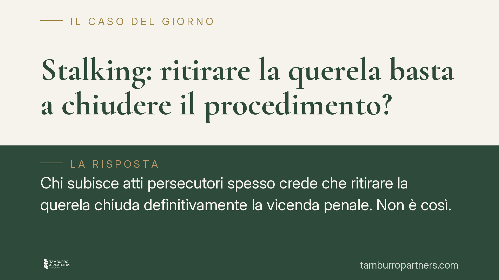

Stalking: ritirare la querela basta a chiudere il procedimento?
Chi subisce atti persecutori spesso crede che ritirare la querela chiuda definitivamente la vicenda penale. Non è così. Quando lo stalking si intreccia con altri reati perseguibili d'ufficio, come la violazione del divieto di avvicinamento, il procedimento può proseguire a prescindere dalla volontà della persona offesa. Un punto tecnico che incide sulle scelte difensive di entrambe le parti.

Il punto di partenza
Lo stalking, tecnicamente "atti persecutori", è previsto dall'art. 612-bis del codice penale. Punisce chi, con condotte reiterate di minaccia o molestia, provoca nella vittima un perdurante stato di ansia o paura, il fondato timore per la propria incolumità o un'alterazione delle abitudini di vita.
È un reato, di regola, perseguibile a querela della persona offesa. Significa che l'azione penale nasce dalla denuncia-querela della vittima e che, in linea di principio, questa può essere ritirata. Ma "ritirare la querela" non è un gesto libero e informale come molti pensano.
La remissione è solo processuale
Il quarto comma dell'art. 612-bis c.p. contiene una regola precisa: nello stalking la remissione della querela è solo processuale. Vuol dire che il ritiro deve avvenire davanti all'autorità giudiziaria, non con una dichiarazione privata o informale fatta all'altra parte.
Questo meccanismo tutela la vittima da pressioni o condizionamenti: la volontà di non proseguire deve essere manifestata in sede qualificata, dove il giudice può verificarne la genuinità.
Non solo. In alcuni casi la querela diventa irrevocabile: quando il fatto è commesso con minacce reiterate e gravi nelle forme previste dall'art. 612, secondo comma, c.p. Qui il ripensamento della persona offesa non produce alcun effetto estintivo.
Esiste poi la procedibilità d'ufficio: quando la vittima è minore o persona con disabilità, o quando il fatto è connesso ad altro delitto perseguibile d'ufficio, il procedimento parte e prosegue indipendentemente da ogni querela. In queste ipotesi il ritiro, semplicemente, non rileva.
Quando lo stalking si lega ad altri reati
Il nodo pratico più delicato riguarda i casi in cui lo stalking non resta isolato. È frequente che, dopo la denuncia, venga disposta una misura cautelare, tipicamente il divieto di avvicinamento ai luoghi frequentati dalla persona offesa.
Se l'indagato viola quella misura, commette un reato autonomo: la violazione dei provvedimenti del giudice in materia di allontanamento dalla casa familiare e divieto di avvicinamento, prevista dall'art. 387-bis c.p. Questo reato è perseguibile d'ufficio.
Da qui una conseguenza spesso trascurata. Anche se la persona offesa rimette la querela per lo stalking, estinguendo quel capo d'imputazione, il procedimento per l'art. 387-bis c.p. prosegue in modo del tutto indipendente. L'estinzione dell'uno non trascina l'estinzione dell'altro.
Sono due vicende giuridiche distinte: una legata alla volontà della vittima, l'altra all'interesse pubblico al rispetto dei provvedimenti del giudice.
Cosa cambia per chi è coinvolto
Per la persona offesa: il ritiro della querela non equivale a una "cancellazione" automatica di tutto. Se nel frattempo l'altra parte ha violato un divieto di avvicinamento, quel fronte penale resta aperto a prescindere.
Per chi è indagato o imputato: contare sulla remissione della querela come soluzione risolutiva può rivelarsi un calcolo errato. La condotta tenuta dopo l'applicazione della misura cautelare pesa in modo autonomo e, spesso, decisivo.
Per entrambi: la gestione dei rapporti successivi alla denuncia richiede attenzione. Un contatto considerato innocuo può integrare la violazione del divieto e aggravare la posizione processuale.
Cosa fare in concreto
- Valuta la remissione con un difensore prima di presentarla: trattandosi di remissione processuale, va formalizzata correttamente davanti all'autorità giudiziaria e ne vanno compresi gli effetti reali.
- Verifica se sono pendenti altri reati d'ufficio: in presenza di una misura cautelare o di una sua violazione, il ritiro della querela per stalking non chiude il procedimento nel suo complesso.
- Se sei sottoposto a divieto di avvicinamento, rispettalo rigorosamente: ogni contatto, anche indiretto, può integrare l'art. 387-bis c.p.
- Se la vittima è minore o persona con disabilità, considera che la procedibilità è d'ufficio: la querela e il suo ritiro non incidono sull'azione penale.
- Documenta ogni passaggio: comunicazioni, provvedimenti e date sono rilevanti per ricostruire la cronologia dei fatti.
Gli orientamenti della Corte di Cassazione in materia sono in evoluzione. Consigliamo di verificare sempre gli estremi aggiornati delle pronunce sulle fonti ufficiali prima di assumere decisioni, e di confrontarsi con un difensore sulla specificità del caso concreto.
Contributo informativo a cura di Tamburro & Partners Avvocati. Non costituisce parere legale.
Ogni condominio ha una storia a sé.
Se gestisci un'amministrazione e vuoi un confronto su una specifica questione condominiale, scrivi allo studio. Ti rispondiamo entro un giorno lavorativo.